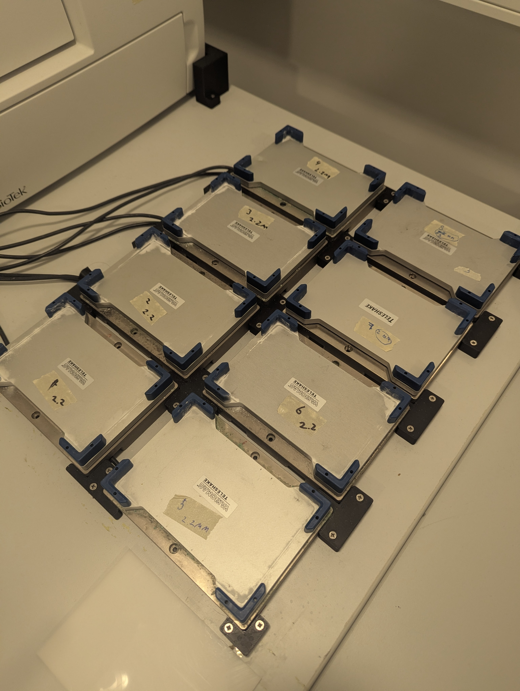
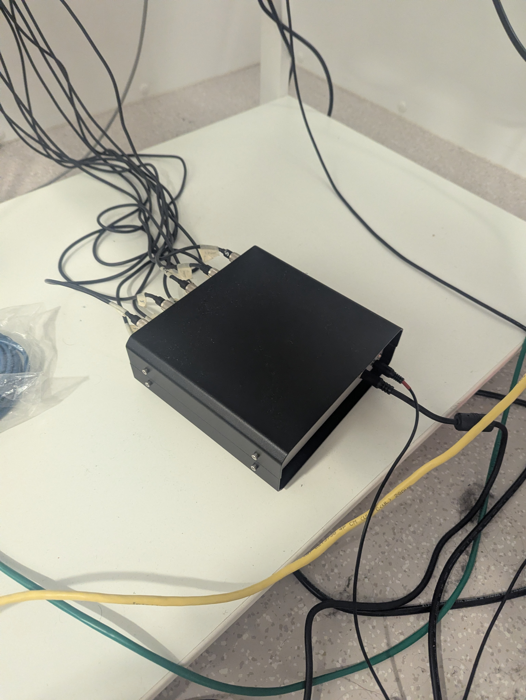

Teleshake 1536
Hardware: VARIONMAG Teleshake 1536 magnetic shakers (8 units), controlled via a custom multi-shaker hub
SiLA server source: Teleshake-1536
Running mode: Native on Windows (not in Docker — see below)
Hardware setup
The lab has 8 VARIONMAG Teleshake 1536 shakers mounted in a fixed rack. All shakers connect via individual control line cables to a custom black metal hub box, which acts as a combined controller and multiplexer. The hub has a single RS-232 connection to the PC (COM1, native serial port — not USB).


The shakers are addressed individually via the RS-232 protocol using address bytes 1–8 corresponding to each shaker's physical port on the hub. Note that this is not a daisy-chain setup — all shakers plug directly into the hub, which handles the routing.
Running the SiLA server
The teleshake SiLA server cannot run inside Docker on Windows because true RS-232 COM ports cannot be passed through to Linux containers (only USB devices can be forwarded via usbipd-win). Run it natively on Windows instead:
uv run python -m sila2_driver.thermoscientific.teleshake1536 --port 50050 --debug --insecure
After starting, use the SiLA browser at http://localhost:3000 to configure the serial port:
- Open SettingsService → SetSerialPort
- Set the port name to
COM1
It is possible that the sila browser does not find the server automatically. You can add it by hand to the sila browser
by specifying the address localhost and port 50050 (in case you specified port 50050 at startup).
Serial port configuration
| Setting | Value |
|---|---|
| Port | COM1 (native RS-232, ACPI\PNP0501) |
| Baud rate | 9600 |
| Parity | None |
| Stop bits | 1 |
Note: COM3 is an unrelated FTDI USB-to-serial adapter on this PC — do not use it for the shakers.
Adressing multiple shakers
The shaker devices are connected to the pc through a hub for serial ports. The original available teleshake SiLA server did not support adressing multiple shakers through one serial connection. The forked version of the teleshake SiLA server does support addressing multiple shakers by shaker id. However, this functionality has not been tested successfully.
Known issues and troubleshooting
Permission denied on COM port
If the SiLA server reports PermissionError: could not open port 'COMx': Access is denied, another process has the port open. Kill all lingering Python processes:
Get-Process python | Stop-Process -Force
Then restart the SiLA server and set the serial port again via the SiLA browser.
Timeout errors / no reply
If all commands time out with no reply from the shaker:
- Check hub power — the hub has an external power supply that must be plugged in firmly. When hub power is lost and restored, the shakers may take a moment to reinitialise.
- Check COM port — after a USB replug or reboot, the port number may change. Run
python -c "import serial.tools.list_ports; print([p.device for p in serial.tools.list_ports.comports()])"to list available ports. - Check shaker power — shakers must be powered on to respond.
Shaker does not start (ERR_NO_ERROR_RECORDED or Not started)
This is where we are currently stranded. The shaker responds to commands, but
Use the GetStatus SiLA command to inspect the full status byte before diagnosing:
StatusByte(accel, on, err, poti_off, debug, address_set, prog, clamp_closed)
Shaker model identification
The shakers are branded VARIONMAG Teleshake (H+P Labortechnik, predecessor to Thermo Scientific). The serial protocol used by the driver is compatible with these units. If you encounter unexpected protocol errors, verify that the baud rate and command codes match the hardware generation installed.
Diagnostic script
A serial port diagnostic script is included at src/openlab_vu/teleshake/diagnose_serial.py. It sends a GetInfo frame at all common baud rates and reports which one gets a reply:
python src/openlab_vu/teleshake/diagnose_serial.py
Use this when you are unsure whether the PC can communicate with the hub at all.